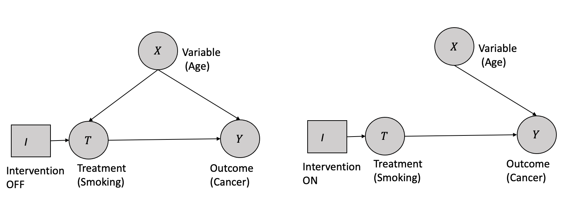

3 Causal Inference: A Practical Approach
Having laid the foundation with the potential outcome framework and fundamental causal concepts, we now delve into the world of causal modeling. In this chapter, we explore the power of causal graphs as a comprehensive approach for inferring causal relationships. Firstly, we introduce causal graphs, explaining the basics of graph modeling in the context of causal inference. Next, we offer an overview of the high-level process involved in causal inference using causal graphs. Subsequently, we discuss each stage of the causal inference process, providing a more detailed examination of the methods and techniques commonly employed. Finally, we present a comprehensive case study utilizing the Lalonde dataset. This study compares and contrasts the various techniques for causal inference discussed, accompanied by a thorough analysis.
3.1 Causal Inference: Logical Flow
In the last chapter, we introduced the causality flowchart for estimating the causal effect, as shown in Figure 3.1.
The two pertinent questions will be answered in this chapter, as shown in Figure 3.2.
- How do we perform identification and convert causal estimands into statistical estimands? What are the tools available for this process?
The identification and conversion of causal estimands to statistical estimands are achieved through causal modeling.
- Once we have obtained statistical estimands, how do we proceed with estimation? What tools can be utilized for this purpose?
Estimation is carried out by leveraging the statistical estimands derived from the causal modeling process and utilizing observational data in conjunction with appropriate statistical techniques.
Tip
Causal models can be constructed either by experts with domain knowledge or through automated procedures known as causal discovery (discussed in Chapter 4). Building causal models requires domain knowledge, identifying relevant variables, and determining the relationships between them.
3.2 Causal Inference: Practical Flow
In the previous section, we examined the logical flowchart that illustrates transitioning from a target causal estimand to an estimate. Now, we will delve into the practical aspect of this process, providing a high-level overview of the steps involved in practice.
This section aims to bridge the gap between theory and application, offering insights into how the causal inference process unfolds in real-world scenarios.
Notably, unlike the machine learning process, the causal inference process involves distinct steps, as Dow et al. underscored in their work (Sharma and Kiciman 2020) and given by Figure 3.3.
To initiate the causal modeling process, one of the methodologies employed is constructing a causal graph with appropriate structural assumptions. Causal graphs depict the causal structure by utilizing nodes to represent variables and edges to represent the causal relationships between them.
After establishing the causal assumptions within a causal model, the subsequent stage of causal analysis is identification. During this stage, the objective is to examine the causal model, encompassing the relationships between variables and the observed variables, to ascertain if there is sufficient information to address a particular causal inference question. Different techniques are utilized with the aim of converting the causal estimands into statistical estimands.
After confirming the estimability of the causal effect and transforming the causal estimands into statistical estimands, the third step revolves around estimating the effect using suitable statistical estimators. Different estimation techniques, such as regression models or propensity score matching, can be utilized to estimate the causal effect.
Finally, the fourth step involves validating and assessing the robustness of the obtained estimate through rigorous checks and sensitivity analyses. This step includes examining the sensitivity of the estimated effect to different model specifications, testing the robustness of the results against potential sources of bias or unobserved confounding, and assessing the generalizability of the findings.
3.3 Causal Modeling
The initial phase of any causal inference effort entails constructing causal models, graphical models in our case, which encode domain understanding and assumptions. A well-designed causal model should capture most of the relationships between the outcome and variables and inter-relationships between the variables.
Causal graphs are a common way of representing the relationships between variables when modeling the joint distribution.
Tip
A cause in a directed acyclic graph (DAG), similar to Bayesian networks, is defined as if any changes are made to a node, a response, or corresponding modifications are observed in the connected node(s). In the context of graphical models, a causal graph is a type of Bayesian network in which each node’s direct causes are represented by its parents.
For a comprehensive and in-depth exploration of causal graphs, we highly recommend referring to Judea Pearl’s work (Pearl 2009, 2000).
3.3.1 Assumptions in Causal Modeling
Figure 3.4 shows the entire flow of assumptions that help in causal modeling.
- Local Markov Assumption: Given the parents in the DAG, a node is independent of all its non-descendants.
- Minimality assumption: The adjacent nodes in the DAG are dependent and have to be considered in the factorization in addition to the local Markov assumption. This assumption removes independent assumptions when the edges are present in the DAG.
- Causal Edge assumption: In causal relationships, every parent is the direct cause of their children.
Thus for a given distribution represented by DAGs, the local Markov assumption helps to measure statistical independence, the minimality assumption helps to focus on statistical dependencies (at least between the adjacent nodes), and finally, layering the causal edge assumption gives us the causal dependencies.
Causal graphs possess an essential characteristic of being able to identify confounding variables. These variables are associated with the cause and the effect but are not causally connected. For instance, in the case of smoking and lung cancer, age may act as a confounding variable related to both smoking and lung cancer but does not lie on the causal pathway between them. By including age as a node in the causal graph, researchers can control for its effects and isolate the causal relationship between smoking and lung cancer.
Causal graphs can identify the minimal set of variables, which are imperative in estimating the causal effect of one variable on another. This technique is known as the identification (discussed later), based on the notion that several paths may exist between two variables in a causal graph. However, only some are crucial in estimating the causal effect. By identifying the minimal set of variables needed, researchers can effectively and accurately estimate the causal effect with less bias and more efficiency.
3.3.2 Building Blocks in Causal Graphs
In graph theory, the term “flow of association” refers to the presence or absence of association between any two nodes in a given graph. This concept can also be expressed as the statistical dependence or independence between two nodes. In the following section, we shall delve into fundamental constituents such as the building block and terminologies essential to graphical representations of various causal associations between variables. Furthermore, we shall conduct preliminary analyses to investigate the variables’ conditional independence or dependence within the building blocks.
3.3.2.1 Chains
A chain is a sequence of nodes such that each node is a parent of the next node in the sequence as shown in Figure 3.5.
There is dependence between \(X_1\) and \(X_2\) and also between \(X_2\) and \(X_3\) because of the causal edges assumption. \(X_1\) and \(X_3\) are dependent as there is a flow of association or statistical dependence from \(X_1\) to \(X_3\) through \(X_2\). Similarly, if we condition on the \(X_2\), \(X_1\) and \(X_3\) are independent of each other. In other words, \(X_2\) will block the association flow between \(X_1\) and \(X_3\) by conditioning.
3.3.2.2 Forks
In a fork, two variables have a single parent between them, as shown in Figure 3.6. Similar to chains, there is dependence between \(X_1\) and \(X_2\) and between \(X_2\) and \(X_3\) because of the causal edges assumption. \(X_1\) and \(X_3\) are dependent as there is a flow of association or statistical dependence from \(X_1\) to \(X_3\) through \(X_2\). Also, if we condition on the \(X_2\), \(X_1\) and \(X_3\) are independent. In other words, \(X_2\) will block the association flow between \(X_1\) and \(X_3\) by conditioning.

3.3.2.3 Immoralities
Immoralities refer to a configuration in a directed acyclic graph where a single node relies on two parents who are not directly connected, as depicted in Figure 3.7. The node \(X_2\) in this structure is called a collider and obstructs the flow of association between nodes \(X_1\) and \(X_3\) without conditioning, unlike in chains or forks. However, unlike chains or forks, by conditioning on the collider \(X_2\), the flow of association or dependence persists between \(X_1\) and \(X_3\).
3.3.2.4 Blocked Path
The concept of a blocked path is intimately tied to the flow of causal influence. A path between two nodes, \(X\) and \(Y\), can be blocked or unblocked by a conditioning set (\(Z\)). The two scenarios that one comes across are:
If there exists a node \(W\) on the path from \(X\) to \(Y\) such that it is part of a chain structure (\(X \rightarrow W \rightarrow Y\)) or a fork structure (\(X \leftarrow W \rightarrow Y\)), and \(W\) is conditioned on (\(W \in Z\)).
There is a collider \(W\) on the path that is not conditioned on (\(W \notin Z\)), and none of its descendants are conditioned on, i.e. (\(de(W) \notin Z\)).
3.3.2.5 d-Separation
The concept of d-separation is tied to the concept of a blocked path in the graph. A path from a node(set) \(X\) to a node(set) \(Y\) is considered blocked given a set \(Z\), if nodes block any node in \(X\) and \(Y\) in \(Z\).
The concept of d-separation implies an important theorem that \(X\) and \(Y\) are conditionally independent given \(Z\). On the contrary, if there exists at least one unblocked path from \(X\) to \(Y\) given \(Z\), then \(X\) and \(Y\) are not d-separated by \(Z\), suggesting that \(X\) and \(Y\) are not conditionally independent given \(Z\). Mathematically,
\[ X \perp_G Y |Z \implies X \perp_P Y|Z \]
3.3.3 Causal Graphs and Structural Interventions
In the context of Causal graphs, a structural intervention is represented as an exogenous variable \(I\), a variable without any causes. It has two possible states (on/off), with a single arrow pointing to the variable it manipulates. When \(I\) is set to the off state, the passive observational distribution is obtained over the variables. In contrast, when \(I\) is set to the on state, all other arrows incident on the intervened variable are removed. The probability distribution over the intervened variable is determined solely by the intervention.
For example, consider a causal graph representing the relationship between smoking, age, and cancer, as shown in Figure 3.8. Suppose that smoking and age are the direct causes of cancer. A structural intervention can be performed on smoking, where \(I\) is introduced as an exogenous variable with two states: on and off. When \(I\) is off, the system behaves according to the passive observational distribution, where the effect of _age_confounds the effect of smoking on cancer. However, when \(I\) is on, all other arrows pointing to cancer from variables other than smoking are removed, and the probability distribution of cancer is a deterministic function of smoking only, allowing for the identification of the causal effect of smoking on cancer.

This “structural” property is critical to understanding the effect of interventions on causal graphs. Suppose there are multiple simultaneous structural interventions on variables in the graph. In that case, the manipulated distribution for each intervened variable is independent of every other manipulated distribution, and the edge-breaking process is applied separately to each variable. This process implies that all edges between variables subject to intervention are removed. After removing all edges from the original graph incident to variables that are the target of a structural intervention, the resulting graph is called the post-manipulation graph, which represents the manipulated distribution over the variables.
3.3.4 Observational Data and Interventional Data
Next, let us discuss the terminologies of observational and interventional data, which play a vital role in understanding the causal process in greater detail.
Observational data is collected simply by passively observing a system or population without any intervention or change in the process. In contrast, interventional data is collected by actively manipulating the system or population in some way, like in randomized control trials. Observational studies may be subject to various types of biases, such as confounding, selection bias, and measurement bias, making it difficult to distinguish between causal and non-causal relationships in the dataset.
Interventional data, on the other hand, is often considered to be the gold standard for establishing causal relationships between variables. This is because interventions allow actively manipulating the independent variable and observing the resulting changes in the dependent variable. Researchers can minimize the effects of confounding and other biases by randomly assigning participants to different treatment groups, like in randomized control trials.
The acquisition of observational data is generally less resource-intensive than interventional data, which can be expensive and impractical to obtain in specific scenarios. This raises the question of whether it is possible to derive interventional data from observational data.
3.3.5 The do-operator and Interventions
Tip
The do-operator and identification process are essential tools that facilitate us going from observational to interventional data. The do-operator helps distinguish interventional distributions from observational distributions, while identification helps determine which causal relationships can be inferred from the observed data. We will discuss the process in detail in the following section.
The do-operator is a symbolic notation used in causal inference to represent interventions. The do-operator is a notation to represent the population’s intervention distribution. Given a treatment (\(T=t\)), intervention corresponds to the whole population subjected to that treatment and given by \(do(T=t)\). This is different from the conditional distribution (\(P(Y|T=t)\)), which represents a subset of the population \((T=t)\) rather than the whole population in the case of intervention as shown in the Figure 3.9. The interventional measures can be computed only through experiments, while the conditional measures can be computed directly from the observational data.
Also, the potential outcome (\(P(Y(t)=y)\)) in terms of interventional distribution using the do-operator is given by:
\[P(Y(t)=y) \triangleq P(Y=y | do(T=t)) \triangleq P(y|do(t)) \] Similarly, the average treatment effect (ATE) in the case of binary treatment using the do-operator is given by:
\[ATE = \mathbb{E}[Y|do(T=1)] - \mathbb{E}[Y|do(T=0)]\]
3.3.6 Modularity assumptions
A modular assumption is about the local impact of any intervention when applied to a causal graph. Modularity assumption is also known as invariance, autonomy, and independent mechanisms.
It states that if a node \(X_i\) is being intervened, then only the mechanism \(P(x_i|pa_i)\) changes and the intervention has no impact on any other mechanism changes, i.e., \(P(x_j|pa_j)\) where \(i \neq j\) remain unchanged. Modularity assumptions is graphically demonstrated in Figure 3.10. The violation of the modularity assumption implies that when a node is intervened, mechanisms of other non-parent nodes changes, and thus any local effect assumption goes away for computation purposes.
3.3.7 Modularity Assumptions and Truncated Factorization
The network factorization for Figure 3.10 can be written as: \[P(x_1, \cdots, x_n) = \prod_iP(x_i|pa_i) \] When we intervene on variable set \(S\), the factorization becomes: \[P(x_1, \cdots, x_n|do(S=s)) = \prod_{i\notin X S}P(x_i|pa_i) \] if the \(x\) is consistent with the intervention, otherwise \[P(x_1, \cdots, x_n|do(S=s)) = 0\] The truncated factorization can be employed to estimate the causal effect of treatment \(T\) on outcome \(Y\) in a simple graph comprising three variables \(X\), \(Y\), and \(T\), with \(X\) as the confounder as shown in Figure 3.11. The aim is to estimate the causal quantity \(P(y|do(T))\).
The network factorization gives us the following:
\[ P(y,t,x) = P(x)P(t|x)P(y|t,x)\] When we intervene on treatment \(T\), we can remove \(t\) factor, i.e. \(P(t|x)\), thus the truncated factorization gives us:
\[P(y,x|do(T)) = P(x)P(y|t,x)\] Next, if we marginalize \(x\) using summation (discrete) or integration (continuous), we get: \[P(y|do(T)) = \sum_xP(y|t,x)P(x)\] Thus, we got identifiability or could go from causal estimand \(P(y|do(T))\) to statistical estimand \(\sum_xP(y|t,x)P(x)\) from observational data.
Now, in a separate statistical world we can rewrite \(P(y|t)\) using marginalization as: \[P(y|t) = \sum_xP(y,x|t)\] Using the the factorization property: \[P(y|t) = \sum_xP(y|t)P(x|t)\] Thus, comparing the two equations, we can conclude that \[P(y|do(t)) \neq P(y|t)\] as \(P(y|do(t))\) has \(P(x)\) where as \(P(y|t)\) has \(P(x|t)\).
3.3.8 Structural Causal Models (SCM)
Structural Causal Models (SCMs) are a critical component of modeling for causal inference. SCMs are mathematical models representing the causal relationships between variables in a system (Spirtes et al. 2000).
Structural Causal Models (SCMs) consist of two fundamental constituents: endogenous variables’ structural equations that portray causal relationships among variables and exogenous variables that represent system variables unaffected by other variables. Causal graph structures depict the structural equations as functions among the variables, visually showcasing the relationships between exogenous and endogenous variables.
In simplest form, if variable \(X\) causes \(Y\), then it can be written as a structural equation:
\[ Y := f(X)\] Stochasticity can be added to the structural equation in the form of noise variables (\(U\)), and the above equation can be rewritten as:
\[ Y := f(X, U)\] When there are many cause-effect relationships, as shown in Figure 3.12, the representation using structural causal models equation with exogenous, endogenous, and noise variables is given by: \[X = f_X(W,U_X)\] \[Z = f_Z(X,Y,U_Z)\]
3.3.8.1 Interventions and Modularity Assumptions in SCM
For the basic causal model as shown in Figure 3.13, with single confounder \(X\) affecting both the treatment \(T\) and the outcome \(Y\), the SCM equations can be written as: \[ T = f_T(X, U_T)\] \[Y = f_Y(X,T, U_Y)\] The interventional SCM or a submodel follows the same as above but replaces the function \(f_T(X,U_T)\) with a variable \(t\) as: \[ T = t\] \[Y = f_Y(X,T, U_Y)\]
3.4 Identification
Tip
Identification is the process of converting causal estimands to statistical estimands. i.e., to go from \(P(Y|do(t))\) to \(P(Y|t)\). If we can go from \(P(Y|do(t))\) to \(P(Y|t)\), we have identifiability.
Let us consider a simple identification process with one treatment (\(T\)), one confounding variable (\(X\)), and one outcome (\(Y\)) as given in Figure 3.14.
Identification is to find \(P(y|do(T))\), which can be iteratively computed from the joint distribution as below: \[ P(y,t,x) = P(x)P(t|x)P(y|t,x)\]
Applying the modularity assumption by intervening on the variable (\(T\)),we get \(P(t|x)=1\) and thus the equation transforms: \[ P(y,x|do(T)) = P(x)P(y|t,x)\]
If we marginalize the variable (\(X\)), we get: \[ P(y|do(T)) = \sum_x P(y|t,x)P(x)\]
Thus, from the causal estimand \(P(y|do(T))\), and identification, we have an equation with only observational or statistical quantities \(\sum_x P(y|t,x)P(x)\). This is called the adjustment formula.
Tip
As highlighted in the overall process illustrated in Figure 3.15, the identification process involves a transformation from causal estimand \(P(y|do(T))\) to statistical estimand (\(\mathbb{E}_{X} P(y|t,X)\) or \(P(y|t)\)) contingent upon the existence or absence of confounding variables.
Identification methods can be classified into two broad categories with subcategories, as shown below.
- Graphical Constraint-based Methods
- Randomized Control Tests
- Backdoor Adjustments
- Frontdoor Adjustments
- Non-Graphical Constraint-based Methods
- Instrumental Variables
- Regression Discontinuity
- Difference-in-Differences
- Pearl’s do-calculus
Next, we will go over these different methods of identification.
3.4.1 Randomized Control Trials (RCT)
As elucidated in the second chapter, comprehending the impact of unseen confounding factors when measuring treatment effects on an outcome is challenging. One way to address this issue is through randomized controlled trials, which introduce randomness in the treatment allocation process and ensure that the resulting groups (binary \(T=0\) and \(T=1\)) are comparable, thus mitigating the confounding impact. In other words, randomization ensures exchangeability, i.e., the treatment groups are entirely interchangeable because of the randomization. Thus the average outcome of the two groups \(\mathbb{E}[Y|(T=1)]=y_1]\) and \(\mathbb{E}[Y|(T=0)]=y_0]\) remain the same. From a causal graph perspective, the randomized treatment removes the edge between the confounder \(X\) and the treatment \(T\), removing the backdoor path and the confounding association.
3.4.2 Backdoor Criterion and Backdoor Adjustment
The interventional causal graph can have various paths from the treatment (\(T\)) to the outcome (\(Y\)). Some of the paths are non-causal, and some of them are causal. One method to perform identification is to block backdoor paths (Pearl 2010). Backdoor paths are the edges that flow into the intervening treatment.
As shown in Figure 3.16, the left side graph is observational \(P(Y| t)\) with various causal and non-causal paths between the treatment (\(T\)) and the outcome (\(Y\)). There are many non-causal paths from \(T\) to \(Y\), and they are \(T \rightarrow W \rightarrow U \rightarrow V \rightarrow Y\), \(T \rightarrow X \rightarrow Y\) and \(T \rightarrow P \rightarrow Y\). Only backdoor paths are \(T \rightarrow W \rightarrow U \rightarrow V \rightarrow Y\) and\(T \rightarrow X \rightarrow Y\) as the edges flow into the intervening treatment \(T\). The non-causal path \(T \rightarrow P \rightarrow Y\) is not a backdoor path. The path \(T \rightarrow X \rightarrow Y\) is the only causal path. The equivalent interventional causal graph \(P(Y | do(t))\) on the right side is with the backdoor paths blocked by removing the edges.
Can we get an equivalent interventional causal graph from the observational graph? The answer is yes, and it can be done by conditioning the nodes/variables in the backdoor paths. By conditioning on \(W\) and \(X\), we get \(P(Y |t,w,x)\) and that is equivalent to removing the edges and blocking the paths as shown in Figure 3.17
Formally, a set of variables \(Z\) are set to satisfy backdoor criterion with respect to treatment \(T\) and outcome \(Y\) if it satisfies the following:
- If the variable set \(Z\) blocks all the backdoor paths from \(T\) to \(Y\)
- \(Z\) does not contain any descendant of the treatment \(T\)
Thus, based on the modularity assumption and the backdoor criterion, one can identify the causal effect by:
\[P(y| do(t)) = \sum_z P(y|t,z) P(z)\]
3.4.3 Front-door Adjustments
Judea Pearl justifies the use of the front-door adjustment method through the illustration of an example in which the effect of smoking (treatment) on cancer (outcome) is studied while taking into account the influence of tar (observed mediator) and an unknown genotype (unobserved confounder), as depicted in Figure 3.18. In such Directed Acyclic Graphs (DAGs), the backdoor criterion is inapplicable due to an unobserved confounder.
The more generic DAG is shown in Figure 3.19 The intuition behind the front-door adjustment can be broken into the following three steps as follows:
Identify the causal impact of treatment (\(T\)) on the mediator (\(M\)) \(P(m|do(t)\) Since there are no backdoor paths, we can write: \(P(m|do(t) = P(m|t)\)
Identify the causal impact of mediator (\(M\)) on the outcome (\(Y\)) \(P(y|do(m)\) Since there is a backdoor path from \(M\) to \(Y\) through \(T\), we can use the backdoor criterion by conditioning on \(T\).
\[P(y|do(m) = \sum_t P(y|m,t)P(t)\]
- Combined the two previous steps to identify the causal impact of treatment (\(T\)) on the outcome (\(Y\)) \[P(y|do(t) = \sum_m P(m|do(t))P(y|do(m)) \] \[P(y|do(t) = \sum_m P(m|t) \sum_{t'}P(y|m,t')P(t') \] The above equation is called the frontdoor adjustment. The set of variables \(M\) satisfy the frontdoor criterion if:
- Variable \(M\) mediates the effect of \(T\) on \(Y\).
- There is no unlocked backdoor path from \(T\) to \(M\).
- All backdoor paths from \(M\) to \(Y\) are blocked by \(T\).
3.4.4 Instrumental Variable Analysis
In situations where specific variables affect the treatment variable(s) but do not directly influence the outcome variable, identification can be achieved through instrumental variable analysis. For instance, consider the example of three variables, namely smoking, cigarette prices, and cancer, as shown in Figure 3.20. It is apparent that cigarette prices affect whether an individual smokes but do not directly impact the likelihood of developing cancer. Such variables that affect the treatment variable(s) but not the outcome variable are referred to as instrumental variables, as described by Pearl (Pearl 2010).
The role of instrumental variables in the identification process is to help address the problem of endogeneity, which occurs when a variable of interest is correlated with the error term in a regression model. This correlation leads to biased and inconsistent estimates of the treatment effect, making it difficult to establish a causal relationship between the treatment and the outcome variable. By using an instrumental variable that is uncorrelated with the error term and affects the treatment but not the outcome variable, the IV analysis can isolate the causal effect of the treatment on the outcome variable.
Thus, when generalized, as shown in Figure 3.21, the identification process is a two-stage process. The first step is to measure the effect of the instrument variable on the treatment using regression as given by: \[\hat{T} = \beta_0 + \beta_1Z \] and then use the predictor \(\hat{T}\) to measure the effect on the outcome \(Y\) as another regression, given by: \[\hat{Y} = \beta_2 + \beta_3\hat{T} \] In addition to the conditions described above being met, instrumental variable analysis is applicable when there are only moderate to small confounding effects and a good sample size of observational data.
3.4.5 Regression Discontinuity
The regression discontinuity approach is a regression-based technique that is well-suited for identifying real-valued outcomes, particularly in scenarios where the outcome data contain thresholds or cut-offs. This method is commonly applied in cases where treatment is provided when the outcome surpasses a certain threshold but not when it falls below it (Imbens and Lemieux 2008). The treatment/intervention impact above/below the threshold can be used for causality estimation. Examples include receiving scholarships and their implications on admissions/SAT scores or receiving a specific medicine dosage for patients above a certain cut-off of diabetes or cholesterol etc. Figure 3.22 shows an example of student GPA as the outcome (\(Y\)) on the y-axis, and student test scores normalized as a variable (\(X\)) on the x-axis with a threshold deciding scholarship (\(T\)) and its impact as a shifted GPA on the y-axis. The shift is the regression discontinuity. Regression discontinuity can be measured using the same trend on either side of the discontinuity using the regression formula: \[\hat{y} = \beta_0 + \beta_1X + \beta_2I(x>x_0) \] \(\beta_2\) is the measure fo regression discontinuity.
3.4.6 Difference-in-Differences
The Difference-in-Differences (DID) approach is a regression-based method that effectively identifies real-valued outcomes when measured over time, as highlighted in (Lechner et al. 2011). Specifically, the DID approach allows for estimating the treatment effect by comparing the differences in outcomes over time between the treatment and control groups. This method is often applied at a particular time and enables estimating the treatment effect using regression analysis, wherein the significant differences between the treatment and control groups can be effectively captured.
To make things concrete, let us consider a simple use case of a binary treatment (\(T=0, T=1\)), with a real-valued outcome (\(y \in \mathbb R\)), and the outcome is measured w.r.t to time as shown in Figure 3.23 Regression analysis can be done using a couple of variables: \(D\) for treatment and \(T\) for time as given by:
\[ y= \beta_0 + \beta_1D + \beta_2T + \beta_3D \times T + \mu\] The regression variables can be interpreted as \(\beta_1\) estimates the marginal effect of treatment, \(\beta_2\) estimates the baseline change over time for the control group, and \(\beta_3\) the treatment effect. There are several assumptions made from regression analysis and causal effect perspective, such as both the groups having common trends and non-independence of observations.
3.4.7 Pearl’s do-calculus
If a query \(Q\) is provided as a do-expression, such as \(Q = P(y|do(x),z)\), its identifiability can be systematically determined using Pearl’s do-calculus. In scenarios where both backdoor and front-door adjustment approaches fail to enable identification, Pearl’s do-calculus provides an effective means of identifying any causal quantity that can be identified (Pearl 2012).
Consider a causal Directed Acyclic Graph (DAG) \(G\), where \(X\), \(Y\), \(Z\), and \(W\) are arbitrary disjoint sets of nodes. The graph \(G_{\overline{X}}\) is obtained by removing all arrows that point to nodes in \(X\) from \(G\). Similarly, the graph \(G_{\underline{X}}\) is obtained by deleting all arrows from nodes in \(X\) from \(G\). To indicate the removal of both incoming and outgoing arrows, we employ the notation \(G_{\overline{X}\underline{Z}}\).
The following three rules apply to all interventional distributions that align with the structure of G.
- Rule 1 (Insertion/deletion of observations):
Per Rule 1, any observational node that fails to influence the outcome through a given path or is d-separated from the outcome can be safely disregarded.
The following is the formal definition: \[P(y|do(x),z,w) = P(y|do(x),w)\ if\ (Y \perp Z|X,W)_{G_{\overline{X}}}\] If the nodes \(Y\) and \(Z\) are d-separated from one another, once we factor in both \(W\) and \(X\), we can eliminate \(Z\) and remove it from the \(P(y| z, w)\).
- Rule 2 (Action/observation exchange):
In the context of a randomized controlled trial, researchers can assign treatment and perform either \(do(x)\) or not \(do(x)\). However, with observational data, it is not feasible to directly perform \(do(x)\). It would be a significant advantage if we could treat an intervention like \(do(x)\) as regular non-interventional observational data. Rule 2 facilitates this transformation.
Per Rule 2, interventions, represented by \(do(x)\), can be handled as observations when the causal effect of a variable on the outcome, specifically \(X \rightarrow Y\), influences the outcome solely through directed paths. Formally this can be written as:
\[P(y|do(x),do(z),w) = P(y|do(x),z,w)\ if\ (Y \perp Z|X,W)_{G_{{\overline{X}}{\underline{Z}}}}\] One can note that the left-hand side involves the interventional operator \(do(z)\), while the right-hand side employs the observed variable \(z\). As long as the condition \((Y \perp Z \mid W)_{G{\underline{Z}}}\) holds, we can convert \(do(z)\) to \(z\) and solely rely on observational data.
- Rule 3 (Insertion/deletion of actions)__: Rule \(3\) states that if an intervention (or a \(do(\cdot)\) expression) does not influence the outcome through any uncontrolled path, it can be disregarded. Specifically, we can eliminate \(do(z)\) if no causal association (or unblocked causal paths) runs from \(Z\) to \(Y\).
\[P(y|do(x),do(z),w) = P(y|do(x),w)\ if\ (Y \perp Z|X,W)_{G_{\overline{XZ(W)}}}\]
Both front-door and backdoor adjustment formulae can be derived using solely the do-calculus. It has been established that the do-calculus is complete, i.e., it can identify all the causal estimands if they exist Shpitser and Pearl (2006). This theorem implies that if the repeated application of these three rules cannot eliminate the do-operations, the query \(Q\) cannot be identified.
3.5 Estimation
This section will discuss various methods to compute estimation from statistical estimands.
There are two broad types of estimation methods:
Covariate Adjustment Methods:
Covariate adjustment techniques involve utilizing the covariates or features (\(X\)) and the treatment (\(T\)) as inputs to one or more machine learning models, which are then used to fit the inputs to the potential outcome output ($Y), thereby capturing the relationship between them. The appropriate model selection, such as linear or non-linear, is contingent on the nature of the relationship between these variables. There are numerous covariate adjustment techniques commonly utilized in practice, which we will describe in detail, including:
- COM Estimator
- GCOM Estimator
- X-Learner
- TarNET
- Matching
- Doubly Robust Learners
Propensity Score Methods:
In these methods, a propensity score is defined as the conditional probability of treatment assignment given a set of observed covariates \(X\). The propensity score adjusts for differences in observed covariates between treated and control groups, creating a pseudo-population in which the covariate distribution is balanced between the two groups.
Some of the techniques are: 1. Propensity Score Matching 2. Propensity Score Stratification 3. Inverse Propensity Score Weighting
3.5.0.1 Conditional Outcome Modeling Estimator (COM Estimator or S-Learner)
As discussed in Chapter 2, the individualized treatment effect (ITE) is fundamentally unknowable; hence, large randomized experiments allow us to measure the average treatment effect (ATE). The individualized treatment effect \(\tau_i\) for a binary treatment is given by: \[ \tau_i \triangleq Y_i(1)- Y_i(0)\] The average treatment effect \(\tau\) is given by: \[\tau = \mathbb{E}[Y_i(1)- Y_i(0)]\] When there are other covariates \(x\) present (observed and/or unobserved), we estimate a more specific effect using those covariates, and it is called the conditional average effect (CATE)
\[\tau(x) \triangleq \mathbb{E}[Y(1)- Y(0)|X=x] \] From the identification discussion, given a sufficient adjustment set \(W\) and the covariates \(X\), we assume that \(W \cup X\) is also a sufficient adjustment set and satisfies the backward criterion, giving us the unconfoundedness.
The ATE is given by:
\[\tau \triangleq \mathbb{E}[Y(1)- Y(0)] = \mathbb{E}_W[\mathbb{E}[Y|T=1,W]- \mathbb{E}[Y|T=0,W]]\] Thus from the causal estimand \(\mathbb{E}[Y(1)- Y(0)]\) we can get statistical estimand \(\mathbb{E}_W[\mathbb{E}[Y|T=1,W]- \mathbb{E}[Y|T=0,W]]\).
To compute the statistical estimand, a machine learning model (for example, a regression model) can be used \(\hat{\mu} \approx \mu\) to compute the conditional expectation \(\mathbb{E}[Y|T,W]\) and an empirical mean (\(\frac{1}{n}\sum_i\)) can be computed over all the data (\(n\)) to approximate \(\mathbb{E}_W\)
\[\mu(1,W) - \mu(0,W) = \mathbb{E}[Y|T=1,W]- \mathbb{E}[Y|T=0,W]\] The model \(\hat{\mu}\) is known as the conditional outcome model, and the estimator as the COM estimator or S-Learner (Single) (Künzel et al. 2019).
Thus, the ATE using COM estimator is denoted by \(\hat{\tau}\) and can be given by:
\[\tau = \frac{1}{n}\sum_i(\hat{\mu}(1,w_i) - \hat{\mu}(0,w_i))\]
Now, CATE estimation using both the adjustment set \(W\) and the observed (and unobserved) covariates \(X\), using the model \(\mu\)
\[\mu(t,w,x) \triangleq \mathbb{E}[Y|T=t,X=x,W]\] Thus the statistical model \(\hat{\mu}\) can be used to compute the CATE \(\tau{x}\) using the COM estimator as: \[\hat{\tau(x)} = \frac{1}{n_x}\sum_{i:x_i=x}(\hat{\mu}(1,w_i,x) - \hat{\mu}(0,w_i,x))\]
Thus, ITE (which is primarily the measure we want) can be approximated using the difference in the predictions of two models as \(n_x=1\)$: \[\tau_i = \hat{\mu}(1,w_i,x) - \hat{\mu}(0,w_i,x)\]
3.5.1 Grouped Conditional Outcome Modeling Estimator (GCOM Estimator)
In most cases, the treatment \(T\) is binary while the adjustment set and the covariates \(W \cup X\) are high dimensional. As seen in the equation, with binary treatment (\(0,1\)) and a high dimensional \(w\), the model fitting the two differences \(\hat{\mu}(1,w_i) - \hat{\mu}(0,w_i)\) will ignore the treatment and resulting ATE will be closer to zero. One easy fix would be to compute two different models for each treatment. Grouping all the data with treatment \(T=1\) and fitting a model \(\hat{\mu}_1(w)\) to predict outcome \(Y\) from \(W \cup X\) and doing the same for treatment \(T=0\) by fitting a model \(\hat{\mu}_0(w)\) and computing the average as below: \[\hat{\tau(x)} = \frac{1}{n_x}\sum_{i:x_i=x}(\hat{\mu_1}(w_i,x) - \hat{\mu_0}(w_i,x))\] Since the estimation is done by grouping based on the treatment values, the estimator is known as grouped conditional outcome model estimator (GCOM estimator). Though the GCOM estimator overcomes the dimensionality imbalance issue over the COM estimator, it has the disadvantage of not using all the data in estimation and fitting the statistical model compared to the COM estimator.
3.5.2 TARNet
COM estimators combine treatment \(T\) and the input covariates \(W\), making the estimator biased towards zero. The GCOM estimator builds two separate estimators for each treatment (binary \(T=0\) and \(T=1\)), and since it does not use all the data, it leads to a higher variance model. TARNet estimators can combine the two by first learning a representation \(\hat{\mu}\) from all the input covariates, and then the layer can branch to two heads as shown in Figure 3.24.
3.5.3 X-Learner
Kunzell et al. proposed a meta-learner, the X-learner, to overcome the limitations of Generalized Causal Outcome Model (GCOM) estimators. The GCOM approach falls short in its failure to utilize the complete dataset for estimating the Conditional Average Treatment Effect (CATE). In contrast, the X-learner uses all available data for both models that comprise the estimator, particularly in scenarios involving binary treatment variables, as detailed in (Künzel et al. 2019).
X-learner has the following three stages:
Step 1
Assume \(X\) is a sufficient adjustment set and is also covers all the covariates, given a binary treatment, two models \(\hat{\mu_0}(x)\) and \(\hat{\mu_1}(x)\) are estimated similar to GCOM estimator for each group.
Step 2(a)
In the first part, imputed ITE is computed for treatment group \(\hat{\tau_{1,i}}\) using the observed potential outcome \(Y_i(1)\) and the imputed counterfactual that we get from the first step \(\hat{\mu_0}(x)\). Similarly, we compute imputed ITE for the control group \(\hat{\tau_{0,i}}\) using the observed potential outcome \(Y_i(0)\) and the corresponding imputed counterfactual that we get from the first step \(\hat{\mu_1}(x)\) \[\hat{\tau_{1,i}} = Y_i(1) + \hat{\mu_0}(x_i)\] \[\hat{\tau_{0,i}} = Y_i(0) + \hat{\mu_1}(x_i)\] Only individual elements from the treatment or control groups are used to compute the ITEs.
Step 2(b)
In this step, a supervised machine learning algorithm like regression can be used to fit a model \(\hat{\tau_1}(x)\) to predict \(\hat{\tau_{1,i}}\) from the above step for each \(x_i\) in the treatment group. Thus the model \(\hat{\tau_1}(x)\) uses all the data from the treatment group in this step and the control group data \(\hat{\mu_0}\) from the previous step. Similarly, a model is fit \(\hat{\tau_0}(x)\) to predict \(\hat{\tau_{0,i}}\) from the last step for each \(x_i\) in the control group.
Step 3
The two estimators are combined using a weighting function \(0 < g(x) <1\) as given:
\[\hat{\tau}(x) = g(x)\hat{\tau_0}(x) + (1-g(x))\hat{\tau_1}(x)\] The authors found that the propensity score performs well as a weighting function.
3.5.4 Matching
Matching is a relatively straightforward estimation technique wherein individuals from the treated and control groups are matched based on their covariates or confounders \(X\), using a similarity or distance metric \(d(\cdot,\cdot)\), as described in (Stuart 2010).
Figure 3.25 shows a simplified view with two dimensions \((X_1,X_2)\) how the nearest neighbor (1-NN) can be used for matching between the treated and the control group.

Formally, the following procedure is followed for 1-NN as below:
Define a similarity or a distance metric \(d(\cdot,\cdot)\).
For each individual, define \(\mathcal{J}(i)\) so that we find the closest counterfactual match (treatment (\(t_j \neq t_i\))) with another individual \(j \neq i\) \[\mathcal{J}(i) = \text{argmin}_{j\ s.t\ t_j \neq t_i} d(x_j,x_i)\]
Thus, every individual ITE can be computed using the actual and the potential counterfactual outcome obtained from \(\mathcal{J}(i)\) above. \[\hat{\tau_{1, i}} = y_i(1) - y_{\mathcal{J}(i)}\] \[\hat{\tau_{0, i}} = y_{\mathcal{J}(i)} - y_i(0)\] These two can be combined into a single notation: \[\hat{\tau_{i}} = (2t_i -1)(y_i - y_{\mathcal{J}(i)})\]
Thus, ATE can be computed using the average across all the individuals \[\hat{\tau(x)} = \frac{1}{n}\sum_{i=1}^{n} \hat{\tau_{i}}\] Consequently, calculating the average treatment effect across the matched groups enables the causal effect estimation since the confounders are similar within these groups, and any differences are attributed solely to the treatment. This simplistic method works particularly well when the number of confounders is limited. However, as the number of dimensions or confounders increases, the method may suffer from the curse of dimensionality. Despite this drawback, the matching technique is easily interpretable by domain experts, although it heavily relies on the underlying metric of distance or similarity.
Notably, it has been demonstrated that the matching algorithm employing the 1-Nearest Neighbor (1-NN) method is equivalent to the covariate adjustment method, which facilitates relating theoretical properties based on this method.
3.5.5 Doubly Robust Estimator
Conditional outcome modeling (\(\hat{\mu}(x)\)) and propensity score-based estimators (\(\hat{e}(x)\)) can be combined to form the doubly robust estimator (Robins, Rotnitzky, and Zhao 1994). \[\hat{\tau}(x) = \frac{1}{n}\sum_i[\hat{\mu}(1,x_i)-\hat{\mu}(0,x_i)]\] \[\hat{\tau}(x) = \frac{1}{n}\sum_i[\hat{\mu}(1,\hat{e}(x_i))-\hat{\mu}(0,(1-\hat{e}(x_i))]\]
The doubly robust method has a property that they are consistent estimators of ATE \(\hat{\tau}\) if either the conditional outcome modeling estimator (\(\hat{\mu}(x)\)) or the propensity score-based estimator (\(\hat{e}(x)\)) are consistent. Also, the technique converges much faster to \(\tau\) than either (\(\hat{\mu}(x)\)) converging to (\(\mu(x)\)) or (\(\hat{e}(x)\)) converging to (\(e(x)\)). This technique has a distinct advantage in high-dimensional data.
3.5.6 Double Machine Learning
Double machine learning estimators, as the name suggests, use machine learning to learn estimators in two stages to “partial out” the confounders (and other covariates) \(X\) as shown in Figure 3.26.
- Stage
1.1 Fit a machine learning model to predict \(Y\) from \(X\) to get \(\hat{Y}\)
1.2 Fit a machine learning model to predict \(T\) from \(X\) to get \(\hat{T}\)
- Partial out the confounding effect by fitting another model to predict \(Y-\hat{Y}\) and \(T-\hat{T}\)
3.5.7 Causal Trees and Causal Forests
Causal trees are similar to classification/regression trees, where leaf nodes, similar to the decision trees, are outcome variables, but the internal nodes are only limited to covariates and do not include the treatment (Wager and Athey 2018). The general algorithm is:
First, the observational data is divided into a train (\(\mathcal{S}^{train}\)) and a test (\(\mathcal{S}^{test}\)) set. The train set is used for building the tree, and the test set is used for estimation.
A greedy algorithm creates the splits like a regular decision tree. The goal of creating partition (\(\Pi\)) using the covariates is slightly different in causal trees compared to standard decision trees. The purpose of creating splits is to find the best covariate to split the node such that the treated group have a different outcome than the control group. The Kullback-Leibler Divergence is one of the techniques used to measure divergence between the outcome class distributions. If there are \(i\) outcomes, \(p_i\) and \(q_i\) are the outcome distribution in the treated and control groups, respectively, the KL divergence \(D\) between the two is given by: \[D(P:Q) = \sum_i p_i\log \frac{p_i}{q_i}\] For a covariate \(X\) that splits a node into children nodes, with total \(N\) instances into \(N_x\) children, a conditional divergence test can be performed using KL divergence
\[D(P(Y|T=1):P(Y|T=0)|X) = \sum_x \frac{N_x}{N}D(P(Y|T=1,x):P(Y|T=0,x))\] For the best split, the objective is to maximize the gain of the divergence between the outcome class distributions between treatment and control, and can be computed using:
\[D_{gain}(X) = D(P(Y|T=1):P(Y|T=0)|X) - D(P(Y|T=1):P(Y|T=0))\] 3. Cross-validation is used to select the depth \(d*\) with pruning that minimizes the MSE of treatment effects using the folds as proxies for the test set.
- Once the tree is fully constructed, the test set \[\mathcal{S}^{test}\] is used to estimate the treatment effects at the leaf nodes.
Causal Forests are an extension of the idea of Causal trees for estimating the ATE. If we have a training set \(\{(X_i, Y_i,T_i)\}^n_{i=1}\), a test data \(x\) and a causal tree predictor given by: \[\hat{\tau}(x) = T(x;\{(X_i, Y_i,T_i)\}^n_{i=1})\] The intention behind causal forests is that instead of one causal tree if many different trees \(T^*\) are built, the average across them would be:
\[\hat{\tau}(x) = \frac{1}{B}\sum_{b=1}^BT_b^*(x;\{(X_i, Y_i,T_i)\}^n_{i=1})\] Many techniques, such as bagging or subsampling the training set, can be employed to build many causal trees for the causal forest. Employing random covariates from the whole set for the splitting criterion can also result in different trees. Creating a tree from one subsample of observations and estimating the effect using other leads to a more unbiased estimate for each tree, making them ``honest’’ and the average of these honest trees make it an unbiased estimate overall. Regression forests built using the honest trees were shown to have a nice theoretical property of the estimates asymptotically normal as the observations go towards infinity.
3.5.8 Propensity Score-Based
As previously discussed, unbiased estimation of the average treatment effect can be achieved through a randomized controlled test, wherein individuals are assigned to either the treatment or control group based on a coin flip. The propensity score technique, on the other hand, aims to re-weight the observational data such that it resembles pseudo-randomized control test data (Imbens and Rubin 2015).
Consider a scenario involving binary treatment and two covariates within an observational dataset. The data points can be separated into two regions with opposing distributions. The propensity scores method involves re-weighting the samples, as depicted, to modify the distribution through weighting such that it is similar and closely approximates randomized assignment.
Propensity score is the probability of being subjected to the treatment \((T=1)\) given the adjustment set \(W\) and is denoted by: \[e(W) \triangleq P(T=1|X)\] The propensity score can be learned using machine learning algorithms as any other regression problem. If the samples are re-weighted using the inverse propensity score of the treatment they received, thus changing the distribution to be more random and balanced.
Propensity score theorem Given the positivity assumption, the unconfoundedness given the adjustment set \(W\) implies unconfoundedness given the propensity score \(e(W)\) and formally written as: \[(Y(1),Y(0)) \perp T|W \implies (Y(1),Y(0)) \perp T| e(W) \] The advantage of propensity scores and the theorem is that during conditioning, when the adjustment set \(W\) is high dimensional, one can use the propensity score \(e(W)\), which is a scalar.
Inverse Propensity Weighting (IPW) Estimator Given the data \((X_1,T_1,Y_1),\cdots,(X_n,T_n,Y_n)\) the machine learning algorithm is first used to learn the estimator \(\hat{p}(T=t|X)\). The ATE can be estimated using: \[\hat{\tau(x)} = \frac{1}{n_1}\sum_{i\ s.t. t_i=1} \frac{y_i}{\hat{p}(T=1|x_i)}- \frac{1}{n_0}\sum_{i\ s.t. t_i=0} \frac{y_i}{\hat{p}(T=0|x_i)}\]
3.5.9 Propensity Score Matching
The Propensity Score Matching (PSM) algorithm is a methodology that emulates a Randomized Controlled Trial (RCT) in its approach to contrasting outcomes between treated and untreated cohorts within the sample that Propensity Score has matched.
However, the implementation of PSM necessitates careful consideration of certain caveats:
The first caveat, termed ‘Common Support’, necessitates that the distribution of propensity for treatment is analogous or identical across both treated and untreated cases.
The second caveat demands the exclusive utilization of baseline attributes unaffected by the intervention during the Matching process.
Thirdly, potential confounding variables must be both observable and without any hidden variables. A failure in this respect could result in biased estimates.
Finally, the fourth caveat advises matching the most pertinent characteristics rather than indiscriminately incorporating every variable into the equation.
The PSM process involves several key steps, as outlined by Jalan and Ravallion (Jalan and Ravallion 2003):
- The calculation of the Propensity Score for all units.
- The matching of treatment cohorts with control cohorts is performed following a predetermined matching strategy; for instance, a strategy could involve using the nearest neighbor method between the treated and control groups, implemented without replacement.
- The evaluation of covariate balance. In the event of an imbalance, revisiting the first and second steps and incorporating alternative specifications is advisable.
- The computation of the average outcome difference between the treatment and control groups.
3.5.10 Propensity Score Stratification
King and Nielsen propose that Propensity Score Matching (PSM) is designed to replicate a fully randomized experiment instead of a blocked randomized one. They further discuss that the exact matching procedure in PSM exacerbates issues such as imbalance, inefficiency, model dependence, and bias while also being unable to effectively mitigate the imbalance (King and Nielsen 2019).
Propensity Score (PS) stratification serves as a balancing mechanism, ensuring that the distribution of observed covariates appears comparable between treated and control groups when conditioned on the PS (Austin 2011). As a result, it facilitates adjusting imbalances in the covariates by modifying the score accordingly.
The specific steps to execute for PS stratification are:
- Calculate the Propensity Score (PS) using logistic regression.
- Mutually exclusive strata are established based on the estimated PS.
- Both the treated and control units are grouped into each stratum.
- The difference in means between treated and control groups is calculated within each stratum.
- The means within each stratum are then weighted to achieve the target estimate.
In the second step of the process, studies have shown that approximately 90% of the bias inherent in the unadjusted estimate can be removed using five strata (Rosenbaum and Rubin 1984). However, the idea that increasing the number of strata beyond this point would lead to a further decrease in bias is not empirically supported. Indeed, simulation studies have indicated that the most favorable outcomes are achieved with between 5 and 10 strata, with different strata beyond this range contributing only minor improvements (Neuhäuser, Thielmann, and Ruxton 2018). It is also essential to consider the practical implications of increasing the number of strata. As the number of strata increases, the number of data points available within each stratum decreases.
During the fifth step of the process, Propensity Score (PS) stratification enables the calculation of both the Average Treatment Effect (ATE) and the Average Treatment Effect on the Treated (ATT), contingent on the weighting method utilized for the means. For the estimation of the ATE, the weighting is determined by the number of units within each stratum. On the other hand, the estimation of the ATT involves assigning weights according to the count of treated units present in each stratum (Imbens 2004).
3.6 Evaluation and Validation Techniques
Evaluating and validating causal models differ from traditional machine learning models, where techniques such as cross-validation and test set evaluations are performed. This section will highlight some standard metrics and methodologies to evaluate causal models.
3.6.1 Evaluation Metrics
The two broad categories for the evaluation metrics are based on whether the subpopulation is homogeneous or heterogeneous and are:
- Standard Causal Effect Estimation
- Heterogeneous Effect Estimation
3.6.1.1 Standard Causal Effect Estimation
Assuming the potential outcome to be real-valued, ff there \(M\) experiments being performed, and for each experiment, the observed ATE is \(\tau\), and the predicted ATE is \(\hat{\tau}\), then various regression-based evaluation metrics are:
- Mean Squared Error of Average Treatment Effect: \[\epsilon_{MSE\_ATE} = \frac{1}{M}\sum_{j=1}^{M}(\tau_j - \hat{\tau}_j)^2\]
- Root Mean Squared Error of Average Treatment Effect: \[\epsilon_{RMSE\_ATE} = \sqrt{\frac{1}{M}\sum_{j=1}^{M}(\tau_j - \hat{\tau}_j)^2}\]
- Mean Absolute Error of Average Treatment Effect: \[\epsilon_{MAE\_ATE} = \frac{1}{M}\sum_{j=1}^{M}|\tau_j - \hat{\tau}_j|\]
3.6.1.2 Heterogeneous Effect Estimation
- Uplift Curve
Uplift modeling aims to identify the effect of an intervention on a particular individual rather than a population, especially in the case of heterogeneity (Gutierrez and Gérardy 2017). Thus, uplift modeling attempts to estimate the ITE (or CATE), i.e., the treatment outcome of a given individual and how it would differ in the absence.
The methodology to generate the uplift curve has parallels to ROC curves in standard machine learning, and the steps are: 1. Use the machine learning method as discussed for estimation and generate CATE for each individual (\(\hat{\mu}^1_i - \hat{\mu}^0_i\)) 2. Sort the uplift scores by decreasing order and compute percentiles in a range (\((0,10)(10,20)\cdots(90,100)\)) 3. For each bucket in the percentiles, one can estimate the difference in prediction for the treatment and the control group predictions on responses. The difference in average is taken for each decile.
\[\bigg(\frac{Y^1}{N^1} - \frac{Y^0}{N^0}\bigg)(N^1 + N^0)\] where \(Y^1\) and \(N^1\) are the sum of the treated individual outcome and the number of treated individuals for the bin. Similarly, \(Y^0\) and \(N^0\) are the control observations’ sum and number.
- The uplift curve is then plotted with the x-axis representing the percentiles of the population and the y-axis representing the uplift gain from the above corresponding to each group.
The advantage of the uplift curve is that we can select the decile that maximizes the gain as the limit of the population to be targeted next time rather than the whole population.
- Qini Curve
Qini curve is a variant of uplift curve where Qini score is computed instead of the uplift score as:
\[Y^1 - Y^0 \frac{N^0}{N^1}\] When there is an imbalance between the treatment and control groups, this measure offers more correction than the uplift score.
- Uplift(Qini) Coefficient
Similar to AUC-ROC curve, one can compute the area under the uplift (qini) curve, and is referred to as the uplift (qini) coefficient and is given by:
\[Uplift_{Coef} = \sum_{a=0}^{N-1}(Uplift(a+1) + Uplift(a))\] \[Qini_{Coef} = \sum_{a=0}^{N-1}(Qini(a+1) + Qini(a))\]
3.6.2 Robustness Checks and Refutation Techniques
Several assumptions are made in every step of causal inference, from building the causal model to estimation. Assumptions are made at the modeling level, such nonexistence of unobserved variables, the relationship between variables (edges in the graph), etc. We might make parametric assumptions for deriving the estimand at the identification step. At the estimation step, we might assume a linear relationship between treatment and observed and similarly between treatment and outcome. Many of these assumptions can be and should be tested for violations, if any. There are many assumptions that are not possible to be validated or refuted.
Similar to standard software testing, there is unit or modular testing and integration testing.
3.6.2.1 Unit or Modular Tests
Designing tests or validations to individually check the assumptions on the model, identification, and estimation process. Some of the tests are:
Conditional Independence Tests: Using the dependence graph and data to validate various independence assumptions, for example, with two variables (\(X_1,X_2\)) and their relationship with treatment \(T\) if \(P(T|X_1,X_2) =P(T|X_1)P(T|X_2)\)
D-Separation Tests: Conditional and marginal independence can be tested between variables in graphs using moralize, orient, delete/add edges, etc.
Bootstrap Sample Validation: Replacing the dataset completely with bootstrapped samples from the graph helps calculate statistically significant changes in the estimand.
Data Subsets Validation: Replacing the given dataset with a randomly selected subset helps to compute changes in the estimands and gauge the impact.
3.6.2.2 Integration or Complete Tests
In integration testing, comprehensive testing on the entire process for validating many underlying assumptions rather than on single steps. Some of them are:
Placebo Treatment Refuter: What would impact the outcome if the treatment variable is replaced by a random variable (e.g., Gaussian)? It should have no impact (zero value of estimation) if the assumptions are all correct or some steps must be corrected.
Adding Random Common Cause: Adding an independent random variable as a common cause should keep the estimate the same. This method can be easily tested on the dataset to see the significance of the estimation change.
Dummy Outcome Refuter: The estimated causal effect should be zero if we replace the outcome variable with an independent random variable.
Simulated Outcome Refuter or Synth Validation: If multiple datasets are generated very close to the generation process of the existing dataset and the assumptions made, the estimation effect should remain the same. This technique is also known as the synth validation technique and is one of the most comprehensive tests for process validation.
Adding Unobserved Confounder: One of the real-world cases if missing the observed confounder from the data or modeling. By simulating a confounder based on some correlation \(\rho\) between the outcome and the treatment, one can run the analysis and see the difference in the estimation. A significant change illustrates a robustness issue in the process.
3.7 Unconfoundedness: Assumptions, Bounds, and Sensitivity Analysis
Throughout the discussion, we assumed unconfoundedness or observed confounding in our inference process. However, Manski et al., in their work, showed that the no unobserved confounding assumption is unrealistic in the real world (Manski 2003).
In the simplest case, we assume an unobserved confounder \(U\) along with an observed confounder \(W\) as shown in Figure 3.27. Thus, the ATE can be written using the adjustment formula as:
\[\mathbb{E}[Y(1) -Y(0)] = \mathbb{E}_{W,U}[\mathbb{E}[Y|T=1,W,U] - ]\mathbb{E}[Y|T=0,W,U]]\] Since \(U\) is unobserved, the ATE can be approximated as
\[\mathbb{E}[Y(1) -Y(0)] \approx \mathbb{E}_{W}[\mathbb{E}[Y|T=1,W] - ]\mathbb{E}[Y|T=0,W]]\] The impact of this approximation and how close the ATE in the equation and equation depends on many underlying conditions. Thus, instead of the ATE being a single value becomes an interval with bounds that depend on the assumptions.
With the simple assumption that the outcome \(Y\) is bounded between \(0\) and \(1\), we know that the individual treatment effect is bounded between the maximum limit as below \[0-1 \leq Y_i(1) -Y_i(0) \leq 1-0\] Thus, \[-1 \leq Y_i(1) -Y_i(0) \leq 1\] Hence the expectations can be bounded as follows: \[-1 \leq \mathbb{E}[Y(1) -Y(0)] \leq 1\] More generally if potential outcomes are bounded between \(l\) and \(h\), the ATE bounds have the interval length \(2(h-1)\) and given by:
\[l-h \leq \mathbb{E}[Y(1) -Y(0)] \leq h-l\]
3.7.1 Observational Counterfactual Decomposition
The ATE can be written in terms of observational and counterfactual components, known as observational-counterfactual decomposition.
The linearity of expectations gives: \[\mathbb{E}[Y(1) -Y(0)] = \mathbb{E}[Y(1)]- \mathbb{E}[Y(0)]\] Conditioning and marginalization on the treatments give: \[ \begin{aligned} \mathbb{E}[Y(1) -Y(0)] = P(T=1)\mathbb{E}[Y(1)|T=1] + P(T=0)\mathbb{E}[Y(1)|T=0]\\ - (P(T=1)\mathbb{E}[Y(0)|T=1] +P(T=0)\mathbb{E}[Y(0)|T=0]) \end{aligned} \]
\[ \begin{aligned} \mathbb{E}[Y(1) -Y(0)] = P(T=1)\mathbb{E}[Y(1)|T=1] + P(T=0)\mathbb{E}[Y(1)|T=0]\\ - P(T=1)\mathbb{E}[Y(0)|T=1] - P(T=0)\mathbb{E}[Y(0)|T=0] \end{aligned} \]
\[\begin{aligned} \mathbb{E}[Y(1) -Y(0)] = P(T=1)\mathbb{E}[Y|T=1] + P(T=0)\mathbb{E}[Y(1)|T=0]\\ - P(T=1)\mathbb{E}[Y(0)|T=1] - P(T=0)\mathbb{E}[Y|T=0] \end{aligned}\]
Thus the equation has observational elements \(P(T=1)\mathbb{E}[Y|T=1], P(T=0)\mathbb{E}[Y|T=0]\) and the counterfactual elements \(P(T=0)\mathbb{E}[Y(1)|T=0], P(T=1)\mathbb{E}[Y(1)|T=1]\) and hence the observational-counterfactual decomposition.Now if we denote \(P(T=1)\) with \(\pi\) and \(P(T=0)\) becomes \(1-\pi\), the equation can we written as:
\[\mathbb{E}[Y(1) -Y(0)] = \pi\mathbb{E}[Y|T=1] + (1-\pi)\mathbb{E}[Y(1)|T=0] - \pi\mathbb{E}[Y(0)|T=1] - (1-\pi)\mathbb{E}[Y|T=0]\]
3.7.2 Bounds
We will provide an overview of nonparametric bounds and elucidate the process of deriving them.
3.7.2.1 No-Assumption Bounds
The no-assumption bounds are the simplest bound that reduces the interval \(2(h-1)\) by half to \((h-1)\) as given below: \[\mathbb{E}[Y(1) -Y(0)] \leq \pi\mathbb{E}[Y|T=1] + (1-\pi)h - \pi l - (1-\pi)\mathbb{E}[Y|T=0]\]
\[\mathbb{E}[Y(1) -Y(0)] \geq \pi\mathbb{E}[Y|T=1] + (1-\pi)l - \pi h - (1-\pi)\mathbb{E}[Y|T=0]\]
Thus, the interval length is: \[(1-\pi)h + \pi h -\pi l - (1-\pi)l\]
\[= h-1\] The idea with more assumptions, as discussed next, is to get a tighter lower and upper bound than the no-bounds interval.
3.7.2.2 Nonnegative Monotone Treatment Response Assumption
Assuming that the treatment always helps, i.e., \(\forall i\ Y_i(1) \geq Y_i(0)\) means that ITE is always greater than \(0\), and thus the lower bound changes from \(l-h\) to 0. The higher bound remains what we got from the no-assumption bounds. Thus, the intervals are:
\[0 \leq \mathbb{E}[Y(1) -Y(0)] \leq \pi\mathbb{E}[Y|T=1] + (1-\pi)l - \pi h - (1-\pi)\mathbb{E}[Y|T=0]\]
By assuming the reverse, the treatment never helps, i.e., \(\forall i\ Y_i(1) \leq Y_i(0)\), gives us the ITE always less than \(0\), and thus the upper bound changes from \(h-1\) to 0. The lower bound remains what we got from the no-assumption bounds. Thus, the intervals are:
\[\pi\mathbb{E}[Y|T=1] + (1-\pi)h - \pi l - (1-\pi)\mathbb{E}[Y|T=0] \leq \mathbb{E}[Y(1) -Y(0)] \leq 0\]
3.7.2.3 Monotone Treatment Selection Assumption
The assumption is that the treatment groups’ potential outcomes are better than the control groups. Thus, we get \(\mathbb{E}[Y(1)|T=1] \geq \mathbb{E}[Y(1)|T=0]\) for \(Y(1)\) and \(\mathbb{E}[Y(0)|T=1] \geq \mathbb{E}[Y(1)|T=0]\) for \(Y(0)\). It can be shown that under the monotone treatment selection assumption, the ATE is bounded by the associational difference of the observations and given by: \[\mathbb{E}[Y(1)-Y(0)] \leq \mathbb{E}[Y|T=1] - \mathbb{E}[Y|T=0]\] Thus, by combining the nonnegative monotone response lower bound assumption and monotone treatment selection upper bound response, we get a tighter interval than the no-assumption bounds and is:
\[0 \leq \mathbb{E}[Y(1)-Y(0)] \leq \mathbb{E}[Y|T=1] - \mathbb{E}[Y|T=0] \]
3.7.2.4 Optimal Treatment Selection Assumption
The assumption here is that each individual gets the treatment that is best suited, i.e. \(\forall i\ T_i=1 \implies Y_i(1) \geq Y_i(0)\) and \(\forall i\ T_i=0 \implies Y_i(0) \geq Y_i(1)\). Thus, we have \(\mathbb{E}[Y(1)|T=0] \leq \mathbb{E}[Y|T=0]\) and \(\mathbb{E}[Y(0)|T=1] \leq \mathbb{E}[Y|T=1]\) which when plugged into the observational-counterfactual equation we get \[\mathbb{E}[Y(1) - Y(0)] < \pi\mathbb{E}[Y|T=1] - \pi l\] \[\mathbb{E}[Y(1) - Y(0)] \geq (1-\pi)l -(1-\pi)\mathbb{E}[Y|T=0]\]
3.7.3 Sensitivity Analysis
Given the presence of observed \(W\) and the unobserved \(U\), the sensitivity analyses help us to quantify the unconfoundedness difference between the ATE adjusted to both \(\mathbb{E}_{W,U}\) as compared to just the observed \(\mathbb{E}_{W}\) (Cinelli et al. 2019).
Considering a simple setting with observed variable \(W\) and an unobserved variable \(U\) with only linear impacts as shown in Figure 3.28, the structural causal model equations as a linear function will be:
\[T = \alpha_w W + \alpha_u U\] \[Y = \beta_w W + \beta_u U + \delta T\] It can be shown that when adjusted for both \(W,U\), we get \(\delta\) \[\mathbb{E}[Y(1) -Y(0)] = \mathbb{E}_{W,U}[\mathbb{E}[Y|T=1,W,U] - \mathbb{E}[Y|T=0,W,U]] =\delta\] Also, when adjusted only for the observed \(W\), we get \[\mathbb{E}[Y(1) -Y(0)] = \mathbb{E}_{W}[\mathbb{E}[Y|T=1,W] - \mathbb{E}[Y|T=0,W]] = \delta + \frac{\beta_u}{\alpha_u}\] Thus the bias, i.e., what would be the difference between when we do not adjust for the unobserved \(U\) as compared to when we adjust for both \(W,U\) will be the difference of the two and is \(\frac{\beta_u}{\alpha_u}\).
A contour plot for different values of \(\beta_u\) and \(\alpha_u\) gives the sensitivity to single unobserved confounding as shown in Figure 3.29
Many researchers, such as Cinelli et al. and Vetich et al., have shown techniques to reduce the constraints (linear assumptions, single variable) and yet be able to perform sensitivity analyses similar to the simple case (Cinelli and Hazlett 2020, veitch2020sense).
3.8 Case Study
We will go through different steps and processes of causal inference to demonstrate and give a practical hands-on experience with a real-world dataset. The goal is to take various steps highlighted in the chapter using the tools. A version of the Python code used in this case study can be found in this Colab notebook.
3.8.1 Dataset
Economist Jean-Jacques Lalonde collected the Lalonde dataset in the 1970s, and has been widely used in research on the evaluation of social programs. The NSWD program was designed to test the effectiveness of a job training and placement program for disadvantaged individuals. The program provided job training, job placement services, and a wage subsidy to disadvantaged individuals (the treatment group), while a control group received no treatment. The goal of the program was to determine whether the treatment had a positive effect on the employment and earnings of the participants. The dataset includes a variety of variables, including demographic characteristics (such as age, education level, and race), employment status, and income.
3.8.2 Tools and Library
We will use doWhy, a Python library for causal inference, for most modeling and analysis. The library includes tools for performing various causal inference tasks, such as identifying the causal effect of a treatment on an outcome variable, estimating the total effect of a treatment on an outcome variable using various interchangeable estimators and assessing the robustness of causal estimates to assumptions about the data generating process. In the case study we use causalml and causallift for further distributional analysis and uplfit modeling. Python libraries such as pandas, matplotlib, scikit-learn etc. are used for data processing, visualization and machine learning.
3.8.3 Exploratory Data Analysis
Plotting the treated group vs. control group with various variables (age, race, income, education) for understanding the distribution across the two as shown:
One can see that the dataset is not balanced between the treated and the control group. The difference between the treated and control groups is quite evident for various variables such as education, age, and hispanic. This may cause issues in many estimation processes and in the propensity-based estimation, we will highlight how the propensity-based techniques change the distribution through weights.
3.8.4 Estimation and Results
3.8.4.1 Identification of Estimand
As discussed we first identify the estimand with variables treat as the treatment \(T\), re78 as the outcome \(Y\) and other nominal/numeric ones such as nodegr, black, hisp, age, _educ__ and __married as the covariates \(X\) as shown in the listing.
from dowhy import CausalModel
model = CausalModel(
data = lalonde_df,
treatment='treat',
outcome='re78',
common_causes='nodegr+black+hisp+age+educ+married'.split('+')
)
identified_estimand = model.identify_effect()The causal graph showing the relationships between the outcome, treatment, and observed confounders is shown in Figure 3.30
3.8.4.2 Estimation and Robustness
We have explored many linear, non-linear, propensity-based, and causal tree-based estimators to give the readers a more comprehensive view.
A simple linear regression estimation is shown, and the results.
linear_regression_estimate = model.estimate_effect(
identified_estimand,
method_name="backdoor.linear_regression",
control_value=0,
treatment_value=1
)
print(linear_regression_estimate)*** Causal Estimate ***
## Identified estimand
Estimand type: EstimandType.NONPARAMETRIC_ATE
### Estimand : 1
Estimand name: backdoor
Estimand expression:
d
--------(E[re78|age,nodegr,married,educ,hisp,black])
d[treat]
Estimand assumption 1, Unconfoundedness: If U→{treat} and U→re78 then
P(re78|treat,age,nodegr,married,educ,hisp,black,U) =
P(re78|treat,age,nodegr,married,educ,hisp,black)
## Realized estimand
b: re78~treat+age+nodegr+married+educ+hisp+black
Target units: ate
## Estimate
Mean value: 1671.1304316174173As discussed in the exploratory data analysis, the data distribution was not symmetrical between the control and the treated group, so we used the inverse propensity-score weighting technique as one of the estimators.
causal_estimate_ipw = model.estimate_effect(
identified_estimand,
method_name="backdoor.propensity_score_weighting",
target_units = "ate",
method_params={"weighting_scheme":"ips_weight"}
)
print(causal_estimate_ipw)The doWhy library provides interesting interpreting techniques to understand the change in distribution, as shown in the listing.
causal_estimate_ipw.interpret(
method_name="confounder_distribution_interpreter",
var_type='discrete',
var_name='married',
fig_size = (10, 7),
font_size = 12
)Table for Estimator Comparison
| Estimator | ATE |
|---|---|
| Naive | 1794.342 |
| Linear Regression | 1671.13 |
| T-Learner | 1693.76 |
| X-Learner | 1763.83 |
| T-Learner | 1693.76 |
| Double Machine Learner | 1408.93 |
| Propensity Score Matching | 1498.55 |
| Propensity Score Stratification | 1838.36 |
| Propensity Score and Weighting | 1639.80 |
3.8.5 Refutation and Validation
Next, we highlight some refutation and validation tests performed on the model, as discussed in the chapter.
3.8.5.1 Removing Random Subset of Data
We choose the causal estimate from inverse causal weighting to perform the refutation as shown:
res_subset = model.refute_estimate(
identified_estimand,
causal_estimate_ipw,
method_name="data_subset_refuter",
show_progress_bar=True,
subset_fraction=0.9
)The difference between the two is around \(17\), and since the p-value is \(0.98 > 0.05\) we can safely say that the null hypothesis is valid and the refutation task had no impact on the estimation.
Refute: Use a subset of data
Estimated effect:1639.7956658905296
New effect:1656.1009245901791
p value:0.98
3.8.5.2 Placebo Treatment
Replacing treatment with a random (placebo) variable as shown:
import numpy as np
res_placebo = model.refute_estimate(
identified_estimand,
causal_estimate_ipw,
method_name="placebo_treatment_refuter",
show_progress_bar=True,
placebo_type="permute"
)The output
Refute: Use a Placebo Treatment
Estimated effect:1639.7956658905296
New effect:-209.15727259572515
p value:0.78The causal estimation through inverse probability weighting can be considered robust based on the p-value.
Austin, Peter C. 2011. “An Introduction to Propensity Score Methods for Reducing the Effects of Confounding in Observational Studies.” Multivariate Behavioral Research 46 (3): 399–424.
Cinelli, Carlos, and Chad Hazlett. 2020. “Making Sense of Sensitivity: Extending Omitted Variable Bias.” Journal of the Royal Statistical Society Series B: Statistical Methodology 82 (1): 39–67.
Cinelli, Carlos, Daniel Kumor, Bryant Chen, Judea Pearl, and Elias Bareinboim. 2019. “Sensitivity Analysis of Linear Structural Causal Models.” In International Conference on Machine Learning, 1252–61. PMLR.
Gutierrez, Pierre, and Jean-Yves Gérardy. 2017. “Causal Inference and Uplift Modelling: A Review of the Literature.” In Proceedings of the 3rd International Conference on Predictive Applications and APIs, edited by Claire Hardgrove, Louis Dorard, Keiran Thompson, and Florian Douetteau, 67:1–13. Proceedings of Machine Learning Research. PMLR.
Huang, Yimin, and Marco Valtorta. 2012. “Pearl’s Calculus of Intervention Is Complete.” arXiv Preprint arXiv:1206.6831.
Imbens, Guido W. 2004. “Nonparametric Estimation of Average Treatment Effects Under Exogeneity: A Review.” Review of Economics and Statistics 86 (1): 4–29.
Imbens, Guido W, and Thomas Lemieux. 2008. “Regression Discontinuity Designs: A Guide to Practice.” Journal of Econometrics 142 (2): 615–35.
Imbens, Guido W, and Donald B Rubin. 2015. Causal Inference in Statistics, Social, and Biomedical Sciences. Cambridge University Press.
Jalan, Jyotsna, and Martin Ravallion. 2003. “Estimating the Benefit Incidence of an Antipoverty Program by Propensity-Score Matching.” Journal of Business & Economic Statistics 21 (1): 19–30.
King, Gary, and Richard Nielsen. 2019. “Why Propensity Scores Should Not Be Used for Matching.” Political Analysis 27 (4): 435–54.
Künzel, Sören R, Jasjeet S Sekhon, Peter J Bickel, and Bin Yu. 2019. “Metalearners for Estimating Heterogeneous Treatment Effects Using Machine Learning.” Proceedings of the National Academy of Sciences 116 (10): 4156–65.
Lechner, Michael et al. 2011. “The Estimation of Causal Effects by Difference-in-Difference Methods.” Foundations and Trends in Econometrics 4 (3): 165–224.
Manski, Charles F. 2003. Partial Identification of Probability Distributions. Vol. 5. Springer.
Neuhäuser, Markus, Matthias Thielmann, and Graeme D Ruxton. 2018. “The Number of Strata in Propensity Score Stratification for a Binary Outcome.” Archives of Medical Science 14 (3): 695–700.
Pearl, Judea. 2000. Causality: Models, Reasoning, and Inference. USA: Cambridge University Press.
———. 2009. “Causal Inference in Statistics: An Overview.” Statistics Surveys 3 (January): 96–146. https://doi.org/10.1214/09-SS057.
———. 2010. “Causal Inference.” Causality: Objectives and Assessment, 39–58.
———. 2012. “The Do-Calculus Revisited.” arXiv Preprint arXiv:1210.4852.
Robins, James M, Andrea Rotnitzky, and Lue Ping Zhao. 1994. “Estimation of Regression Coefficients When Some Regressors Are Not Always Observed.” Journal of the American Statistical Association 89 (427): 846–66.
Rosenbaum, Paul R, and Donald B Rubin. 1984. “Reducing Bias in Observational Studies Using Subclassification on the Propensity Score.” Journal of the American Statistical Association 79 (387): 516–24.
Sharma, Amit, and Emre Kiciman. 2020. “DoWhy: An End-to-End Library for Causal Inference.” arXiv Preprint arXiv:2011.04216.
Shpitser, Ilya, and Judea Pearl. 2006. “Identification of Joint Interventional Distributions in Recursive Semi-Markovian Causal Models.”
Spirtes, Peter, Clark N Glymour, Richard Scheines, and David Heckerman. 2000. Causation, Prediction, and Search. MIT press.
Stuart, Elizabeth A. 2010. “Matching Methods for Causal Inference: A Review and a Look Forward.” Statistical Science: A Review Journal of the Institute of Mathematical Statistics 25 (1): 1.
Wager, Stefan, and Susan Athey. 2018. “Estimation and Inference of Heterogeneous Treatment Effects Using Random Forests.” Journal of the American Statistical Association 113 (523): 1228–42.